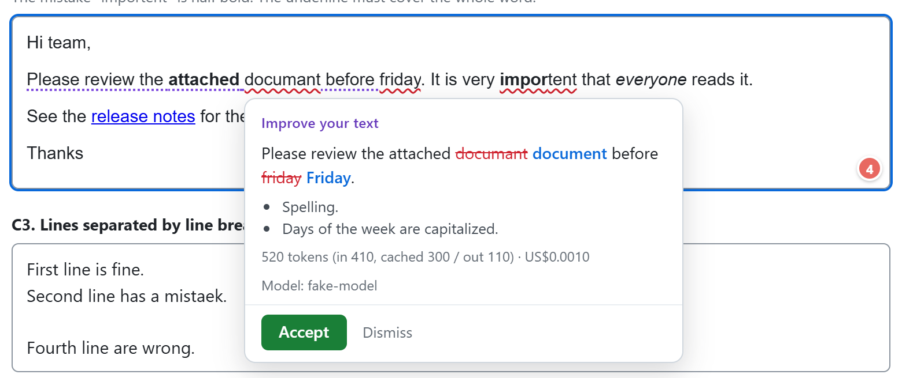
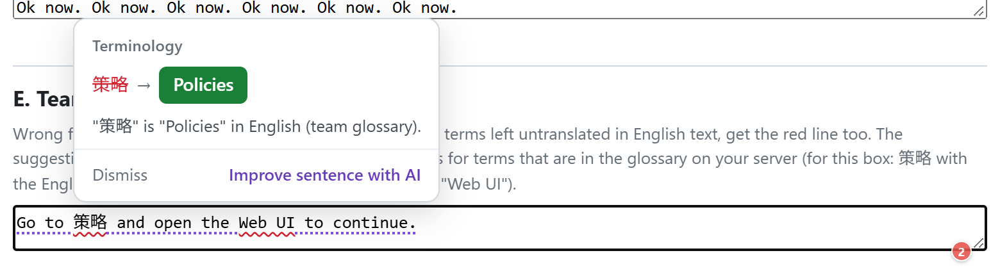
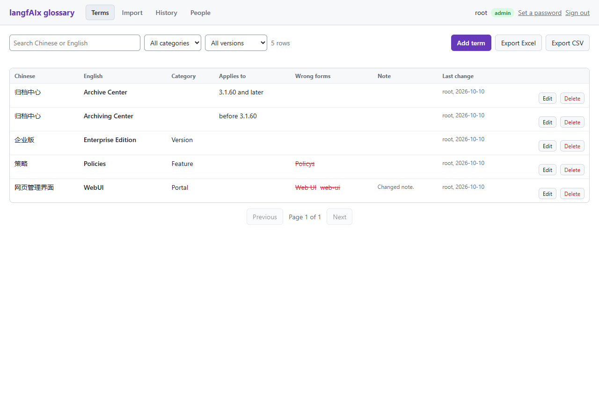
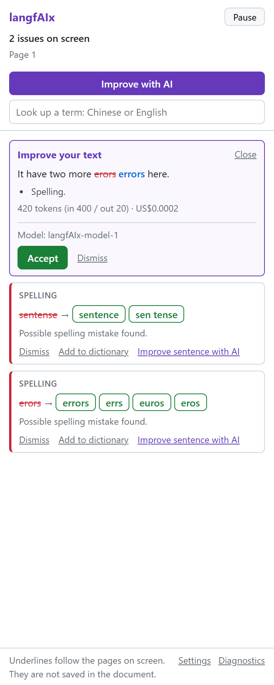

Open source · AGPL-3.0 · self-hosted 开源 · AGPL-3.0 · 自己架设
langfAIx is a writing checker for teams that runs on your own server. It underlines mistakes as you write, in web pages and in Microsoft Word, keeps your terminology consistent, and rewrites a sentence with AI only when you ask.
langfAIx（language fix with AI）是给团队用的写作检查工具，跑在你自己的服务器上。它在网页输入框和 Microsoft Word 里边写边划线，让术语保持一致，只有你点了，AI 才会改写一句话。
- The marks you will see as you write:
- a mistake
- could read better
- 写的时候你会看到两种线：
- 写错了
- 可以改得更好

What it does做什么
Three things, kept apart on purpose三件事，故意分开
What runs by itself is free and stays on your server. What costs money or leaves the server happens only on a click.
自己运行的那部分不花钱，文字不出你的服务器。要花钱、要把文字送出去的那部分，点了才发生。
Rule checks规则检查 (rule check)
Spelling, grammar and style are checked as you type by a LanguageTool server that you host. No model is involved.
拼写、语法、文体，边写边查，用的是你自己架的 LanguageTool 服务器。这一步不经过任何模型。
A glossary your team owns团队自己的术语表 (glossary)
Standard terms are not flagged as typos. Registered wrong forms are flagged, and so are source-language terms left inside English text, with your English term as the suggestion.
标准译法不会被当成错字。登记过的错误写法会被提示。英文里夹着没翻译的源语言术语也会被提示，建议就是你们定的英文。
AI rewritingAI 改写
One sentence at a time, through your own LLM gateway. Every call shows its tokens and its cost. With a self-hosted model, no text leaves your network.
一次一句，走你自己的 LLM 网关 (gateway)。每一次都显示用了多少 token、花了多少钱。接自己架的模型时，文字完全不出内网。
- You type你在打字 In a text box on any web page, or in a Word document. 在任何网页的输入框里，或者 Word 文档里。
- Your server checks it你的服务器检查 The rules and the glossary. Red lines appear. 规则加术语表。红线出现。
- Hints, for free免费的提示 Purple lines mark sentences worth a second look. Worked out from the check result, without AI. 淡紫色的线标出值得再看一眼的句子。用检查结果算出来的，不调用 AI。
- You click, AI answers你点了，AI 才回答 Only that sentence goes to the model you chose. The card shows what it cost. 只有那一句送到你选的模型。卡片上写着花了多少。
Screens截图
What it looks like长什么样
The same checks in the browser and in Word, and one page where the team keeps its terms.
浏览器和 Word 里是同一套检查，另有一个页面给团队维护术语。



The screenshots come from the project's automated browser tests and use made-up text. The Word task pane is shown as rendered in a test browser, not inside Word.
截图来自项目的自动浏览器测试，里面的文字都是编的。Word 的侧边栏是在测试用的浏览器里渲染的，不是在 Word 里截的。
In the box包含什么
Two front ends, one backend两个前端，一个后台
Prompts and glossary are managed in one place, and users never see the provider key.
提示词和术语表集中管理，使用者看不到模型服务商的 key。
Browser extension浏览器扩展
Chrome and Edge. Text areas, single-line inputs and rich-text editors, also inside frames. One-click replace, with undo.
支持 Chrome 和 Edge。多行、单行输入框和富文本编辑器（包括内嵌框架里的）都能划线。点一下替换，可以撤销。
Word add-inWord 插件
The same checks in Word for Windows, following the pages on screen, with a task pane for suggestions and AI.
Windows 版 Word 里同样的检查，跟着屏幕上的页面走。侧边栏里看建议、用 AI 改写。
Glossary admin page术语表管理页面
Import from Excel or CSV, export, three roles, a change log, sign-in with a name and password.
从 Excel 或 CSV 导入，导出，三种角色，改动记录，名字加密码登录。
A key and a budget per user每人一把 key，各有预算
Through LiteLLM virtual keys. Works with OpenAI and with self-hosted models such as vLLM and Ollama.
用的是 LiteLLM 的虚拟 key (virtual key)。可以接 OpenAI，也可以接自己架的模型，例如 vLLM 和 Ollama。
Personal dictionary个人词典
Words you add stop being flagged. Stored on your own computer, no account needed.
加进去的词不再被标成错字。存在你自己的电脑上，不需要账号。
Languages语言
English, Chinese, Catalan, Dutch, French and German. English is the most tried.
英语、中文、加泰罗尼亚语、荷兰语、法语、德语。试得最多的是英语。
Compare比较
Where it fits, and where it does not适合谁，不适合谁
If all you need is spelling and grammar in the browser, LanguageTool's own extension pointed at your server, or Harper, is simpler. langfAIx is for teams that also want an enforced glossary, AI rewriting under their own control, and Word.
如果只要浏览器里的拼写和语法检查，把 LanguageTool 官方扩展指向你自己的服务器，或者用 Harper，都更简单。langfAIx 是给还想要这几样的团队用的：管得住的术语表、掌握在自己手里的 AI 改写、Word。
| langfAIx | LanguageTool's extension with your own serverLanguageTool 官方扩展接自己的服务器 | Harper | Grammarly Business | |
|---|---|---|---|---|
| Self-hosted自己架设 | yes是 | yes是 | runs in the browser在浏览器里运行 | no否 |
| Rule checks规则检查 | LanguageTool, open-source rulesLanguageTool 的开源规则 | LanguageTool | its own rules, English only自己的规则，只有英文 | proprietary私有 |
| Team glossary with wrong forms带错误写法的团队术语表 | yes, with a source language有，可以带源语言 | no没有 | no没有 | style guide, English文体指南，英文 |
| AI rewritingAI 改写 | on a click, your own gateway, cost shown点了才运行，走自己的网关，显示成本 | no (cloud premium only)没有（只在云端付费版） | no没有 | yes, their cloud有，在他们的云上 |
| Word | add-in, Windows, Microsoft 365插件，Windows，Microsoft 365 | official add-in官方插件 | no没有 | yes有 |
| License许可证 | AGPL-3.0 | LGPL-2.1 server服务器是 LGPL-2.1 | Apache-2.0 | commercial商业 |
What it does not do well yet已知局限
- Setup is not trivial: five containers, and for the Word add-in a host name with an HTTPS certificate that users' computers trust. 架设不简单：五个容器。要用 Word 插件的话，还要一个域名和使用者电脑信任的 HTTPS 证书。
- The Word add-in needs Word for Windows with a Microsoft 365 subscription and is installed by sideloading. Mac and Word for the web are untested. Word 插件只支持 Windows 上订阅版 (Microsoft 365) 的 Word，用旁加载 (sideload) 的方式安装。Mac 和网页版没有试过。
- Rule quality is that of open-source LanguageTool, which is weaker than its paid service. The AI rewrite is meant to cover the gap. 规则质量取决于开源版的 LanguageTool，比它的付费版弱。这部分由 AI 改写来补。
- No Google Docs, or other editors that draw their text on a canvas. 不支持 Google Docs 这类把文字画在 canvas 上的编辑器。
Self-host自部署
Run it on your own server架在你自己的服务器上
You need Docker with the compose plugin and about 4 GB of memory.
需要 Docker 和 compose 插件，约 4 GB 内存。
- Start the stack把整套服务起起来 Copy the example settings, set three secrets, and bring it up. 复制设置的样本，填三个密钥，然后启动。
- Add a model and a key加一个模型，生成一把 key In the LiteLLM admin UI. Point it at OpenAI or at a model you host. 在 LiteLLM 的管理后台里做。可以指向 OpenAI，也可以指向你自己架的模型。
-
Load the extension加载扩展
Load the
browser-extensionfolder in Chrome or Edge, enter your server's address and your key, and type into any text box. 在 Chrome 或 Edge 里加载browser-extension文件夹，填服务器地址和你的 key，然后在任何输入框里打字试试。
$ git clone https://github.com/DestinyJazz/langfAIx.git
$ cd langfAIx
$ cp .env.example .env
# set the three secrets in .env, then:
$ docker compose up -d --build
$ curl http://localhost/api/healthzThis standalone stack is new and has not been run on a clean machine yet. The setup that is in daily use sits behind a Traefik reverse proxy on an internal network, with certificates from Let's Encrypt and no port open to the internet. Both are described in the deployment guide; the steps above are in the README, and how the parts fit together is in the architecture notes.
这一套独立的部署是新写的，还没有在干净的机器上跑过。每天在用的那一套放在内网，前面是 Traefik 反向代理 (reverse proxy)，证书来自 Let's Encrypt，不对公网开放任何端口。两种做法都写在部署说明里；上面的步骤在 README 里；各部分怎么配合见架构说明。部署说明和架构说明是英文的。
For teams and companies给团队和公司
langfAIx is free software under the AGPL-3.0. You may use it, change it and host it yourself. If you run a changed version as a network service, the license asks you to offer your changes to its users.
langfAIx 是自由软件，采用 AGPL-3.0。你可以使用、修改、自己架设。如果你把改过的版本作为网络服务提供给别人用，许可证要求你向那些使用者提供你的修改。
For organisations that cannot use AGPL software, or that want help, there is a commercial option:
不能使用 AGPL 软件的组织，或者需要协助的团队，可以走商业的路：
- help with deployment on your own network, including self-hosted models 协助在你们自己的网络里部署，包括接自己架的模型
- a support contract支持合同
- a commercial license商业授权 (commercial license)
Features for larger organisations, such as single sign-on, audit export and a review workflow for the glossary, are planned and not built yet. Say which one you need.
给大一些的组织用的功能，例如单点登录 (SSO)、审计导出、术语表的审核流程，在计划里，还没有做。告诉我们你需要哪一样。
Get in touch on GitHub在 GitHub 上联系Privacy隐私
The software runs on your server, so what it does with text is in your hands:
软件跑在你的服务器上，所以文字怎么处理由你做主：
- AI never runs by itself. Automatic checks use only the rule engine on your server. AI 永远不会自己运行。自动的检查只用你服务器上的规则引擎。
- Only the sentence or selection the user picked is sent to the model. 送给模型的只有使用者点的那一句或选中的那一段。
- The backend does not store checked text, and does not store or log users' keys. 后台不保存检查过的文字，不保存也不记录使用者的 key。
- Fields that look like passwords, names, email, addresses, card numbers or search, and code editors, are skipped. These are rules that lean towards not checking, not a guarantee. 看起来像密码、姓名、邮箱、地址、卡号、搜索的输入框，以及写代码的地方，会被跳过。这是一组"拿不准就不检查"的规则，不是保证。
This describes the code as published. Whoever runs a server can change it, so ask the person who runs yours. The details are in the security notes.
以上说的是公开的这份代码。架服务器的人可以改它，所以请问你那台服务器的管理员。细节见安全说明（英文）。
This page sets no cookies and loads nothing from other servers. Your language choice is kept in your own browser.
这个网页不设 cookie，不从别的服务器加载任何东西。你选的语言只记在你自己的浏览器里。